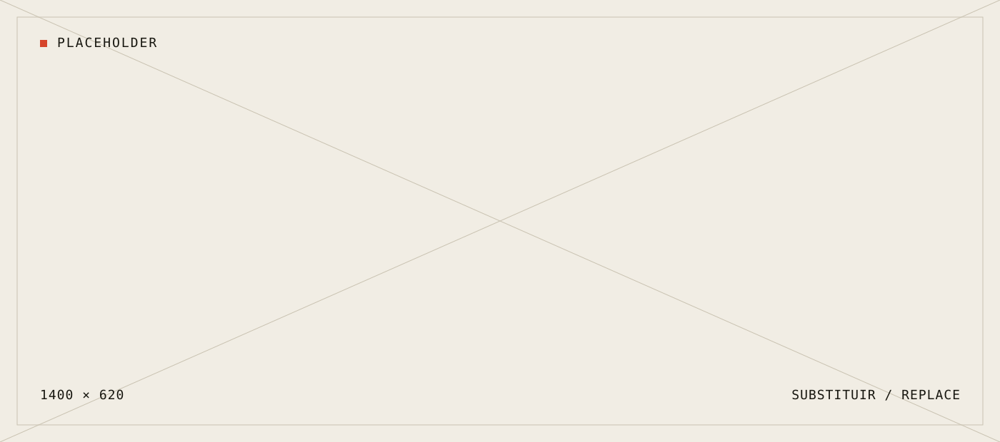

Branding / 2026
Motoclube
Identidade visual para um grupo informal de motociclistas. O símbolo nasce da estrada vista de dentro do capacete; a marca reúne símbolo, paleta e tipografia em aplicações como adesivos e o perfil do clube.
As imagens desta página são espaços reservados e serão substituídas pelos arquivos finais. O texto segue o levantamento do projeto; nome oficial do clube, perfil no Instagram, valores de cor e especificações tipográficas ainda precisam ser confirmados. Os dados pendentes estão indicados explicitamente.

Contexto
Uma identidade para um grupo informal.
O Motoclube é um grupo informal de motociclistas. O contato chegou por indicação de um participante; eu não conhecia o grupo antes do projeto. O trabalho começou em 2026, a partir de um questionário curto, com respostas diretas do grupo.
O objetivo era criar uma identidade com símbolo próprio, aplicável em adesivos e no perfil do clube. O ponto de partida foi esse questionário, não um briefing extenso.
Nome oficial do clube, perfil no Instagram e dados técnicos ainda serão confirmados.
“A estrada vista de dentro do capacete.”
Conceito / 2026Conceito
A estrada dentro do capacete.
O símbolo parte de uma imagem simples: a estrada ocupando o campo de visão de quem está dentro do capacete. As linhas da estrada acompanham as curvas reais do capacete.
A construção foi pensada para funcionar como marca, não como ilustração. As variações e a orientação para foto de perfil cobrem a leitura em diferentes escalas.

Símbolo
Um símbolo construído no digital.
O desenvolvimento aconteceu diretamente no ambiente digital. Não há rascunhos manuais preservados: o desenho foi testado em variações de forma e composição até chegar à versão principal.
A versão principal é acompanhada de variações para fundos claros e escuros. A entrega também orienta o uso sobre claro e escuro, a área de respiro e a foto de perfil.

Sistema visual
Asfalto, sinalização e paisagem.
A paleta parte do repertório da estrada: cinza asfalto, amarelo das marcações e verdes da paisagem. A tipografia principal é uma serifada bold, em caixa alta, com desenho amplo e cantos arredondados.
A identidade não depende de muitos elementos. O símbolo, a paleta e a tipografia sustentam as aplicações e foram construídos para manter a leitura consistente.

Valores exatos de cor, fonte e espaçamento serão incorporados com os arquivos finais. Esta prévia não inventa esses dados.
Aplicações
A marca fora do arquivo.
A identidade foi aplicada em adesivos e no perfil do clube no Instagram. A entrega também foi organizada em um PDF de apresentação, com orientações de uso e variações.

O PDF de apresentação ainda não está disponível nesta prévia. O link será adicionado quando o arquivo final for incorporado.
Resultado
Aprovada de imediato, em uso.
A proposta foi aprovada de imediato pelo grupo. A identidade segue em uso pelo clube.
Não há métricas de alcance, pesquisa de percepção ou resultados comerciais documentados. O resultado observável é a continuidade do uso. O sistema foi construído para manter coerência entre o símbolo, as variações e as aplicações.
Ficha técnica
Informações do projeto.
- Categoria
- Branding / identidade visual
- Cliente / contexto
- Grupo informal de motociclistas (nome oficial a confirmar)
- Ano
- 2026
- Escopo
- Símbolo, sistema visual, variações e orientações de aplicação
- Entregas
- Logo vetorial, paleta, variações, orientações de uso claro/escuro, área de respiro, orientação para foto de perfil e PDF de apresentação
- Ferramentas
- CorelDRAW
- Tipografia
- Serifada bold, caixa alta, desenho amplo e arredondado (fonte a confirmar)
- Status
- Prévia editorial; imagens e dados oficiais a incorporar
- Conteúdo
- Nome oficial, Instagram, cores e especificações tipográficas a confirmar
Ficha em prévia. Os dados oficiais e os arquivos finais serão incorporados antes da publicação.